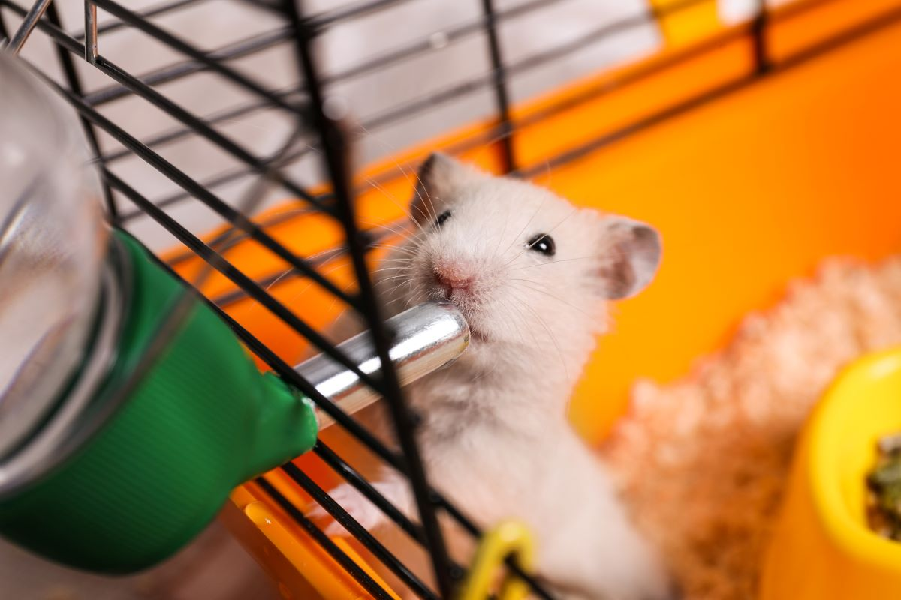

Hamster's Favourite Juice/h1>

Description
How to make hamster's favourite juice. This recipe is my hamster's (Peso) favourite drink.
Ingredients
- a drop of peach nectar
- a fingernail-sized mango
- some distilled water
Steps
- Mix all the ingredients together in a small petridish.
- Blend in blender at max speed.
- Garnish with small blueberry and serve.
Return to Main Page
Return to Top